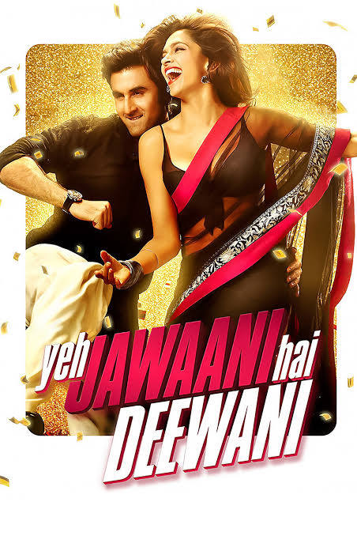
Watch now
Yeh Jawaani Hai Deewani also abbreviated as YJHD, is a 2013 Indian Hindi-language coming-of-age romantic comedy-drama film directed by Ayan Mukerji, written by Mukerji and Hussain Dalal, edited by Akiv Ali and produced by Karan Johar under Dharma Productions.[4] It stars Ranbir Kapoor and Deepika Padukone in their second film together after Bachna Ae Haseeno (2008), alongside Kalki Koechlin and Aditya Roy Kapur.
Main Casts

Ranbir Kapoor as Kabir "Bunny" Thapar.
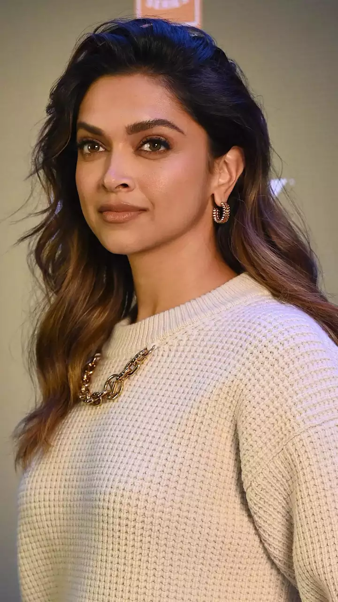
Deepika Padukone as Dr. Naina Talwar..
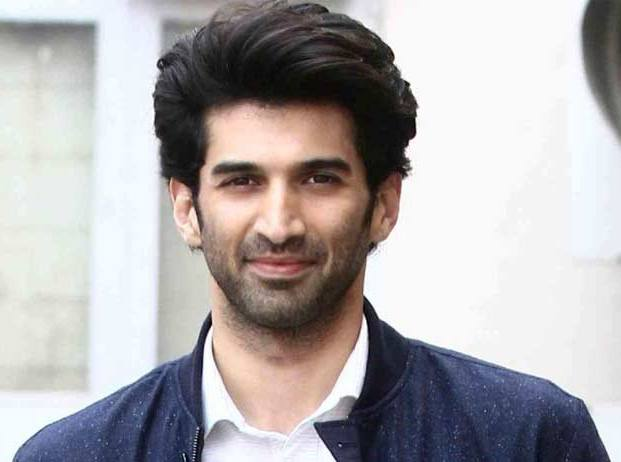
Aditya Roy Kapoor as Avinash "Avi" Shiv Arora.
.jpg)
Kalki Koechlin as Aditi "Adi" Mehra Khanna.
More casts :
About
Naina Talwar is a medical student who feels like an outcast due to her introverted nature. An encounter with an old classmate, Aditi Mehra, makes her realize that she wants more from life. She makes an impulsive decision to follow Aditi on a hiking trip to the Himalayas in Manali. During the hike, she renews her friendship with other former classmates, Kabir "Bunny" Thapar and Avinash "Avi" Shiv. Bunny is a charmer whose dream is to wander and discover the world; he has no interest in settling down. Avi is a playboy who is addicted to alcohol and betting. Throughout the trek, Naina and Bunny grow closer and she falls in love with him. Meanwhile, Aditi grows jealous as Avi flirts with another friend. Bunny and Naina realize that she has feelings for Avi. At the end of the trip, Avi reveals that Bunny has been accepted into the school of journalism at Northwestern University in Chicago. Naina realizes that love and marriage have no part in his plans and remains silent about her feelings. Eight years later, Naina has finished medical school and is now working in a clinic. Bunny works as a videographer for a travel show on FOX Network and travels the world. He receives an offer to become a host for a new travel show, which he accepts. He also receives a wedding invitation from Aditi; she is marrying a wealthy engineer, Taran Khanna. Bunny comes to Udaipur for her destination wedding, where Avi acts repulsive toward him since Bunny never bothered to stay in touch. Naina's feelings for Bunny grow once again, and he too finds himself attracted to her. However, as she doesn't want to get her heart broken again, she avoids him. Bunny sees Aditi fighting with Taran; she reassures him that it was because she wanted to slap Avi for splurging on booze and poker while Taran paid off his debts. She says she has gotten over Avi and is much happier with Taran. Bunny realizes that he feels the same way about Naina but sees her with another man and feels jealous, causing the two to argue. Naina says she can't keep hanging out with him because she will fall in love again and Bunny kisses her. They admit they love each other but neither is willing to give up a career to follow the other. Naina decides that it's best they forget each other and they share a tearful goodbye. On the night of Aditi's wedding, Bunny leaves for Paris. At the airport, he realizes the importance of what he is leaving behind and goes back home, where he reconciles with his stepmother. On New Year's Eve, Naina, alone at home, receives a surprise visit from Bunny. He turned down his dream job to be with her and proposes, but she fears that he might regret his decision. Bunny counters that he is happy with her and wants to continue traveling – but with her, arguing that they can make a life together. Naina concedes, and they have a conference call with Aditi and Avi. They all wish each other Happy New Year and the film ends with Bunny and Naina embracing.
 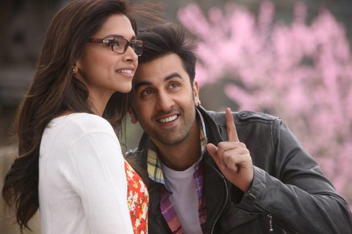
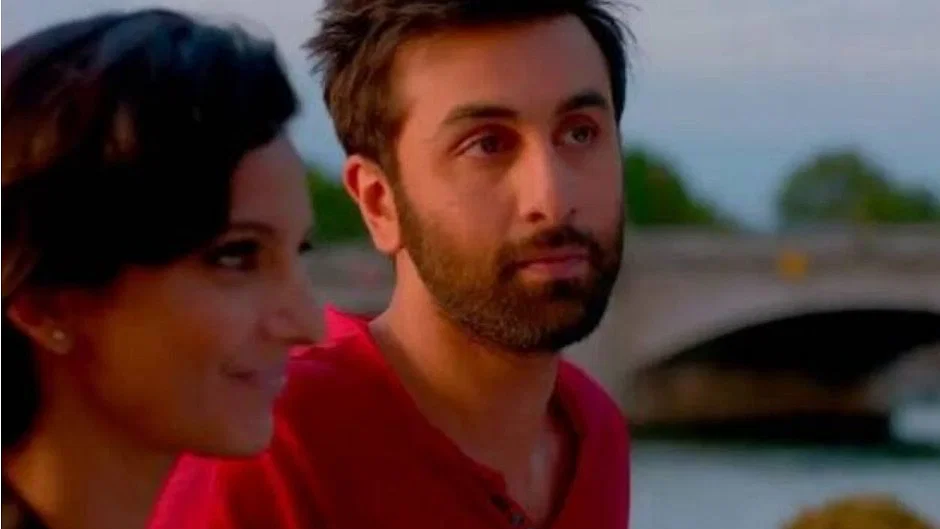
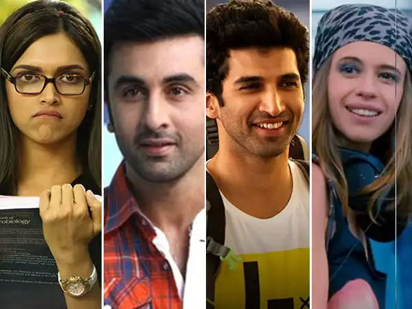
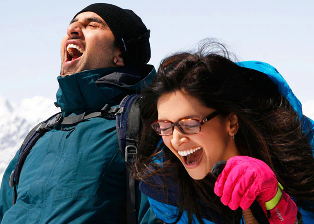
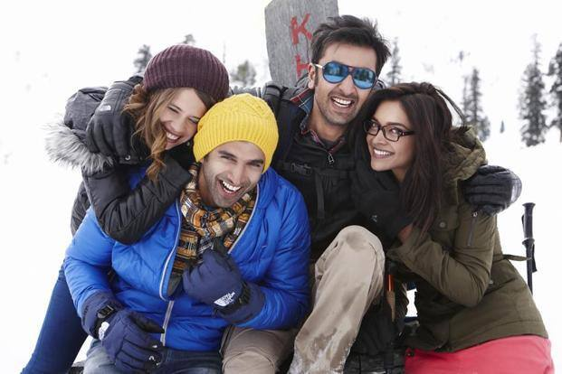
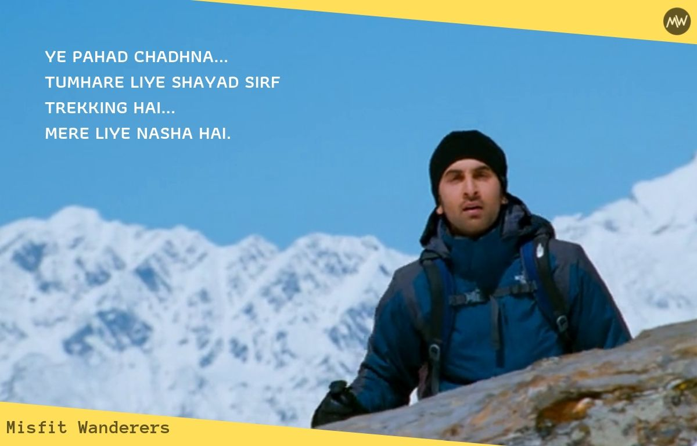
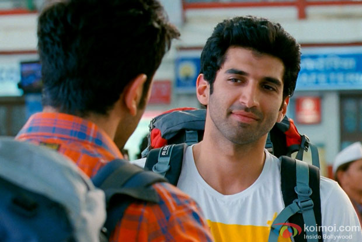
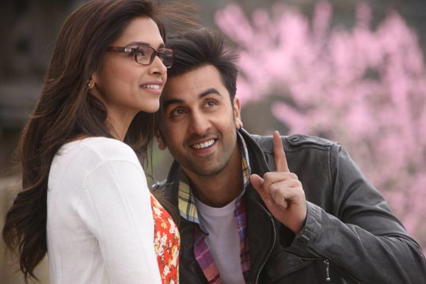
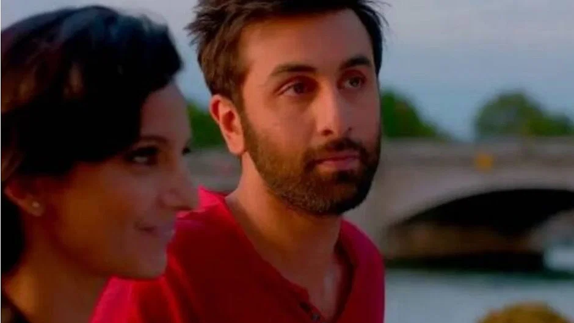
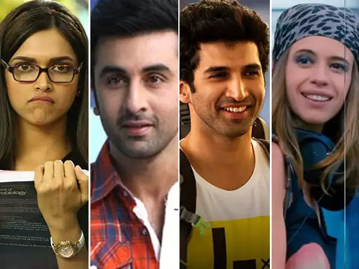
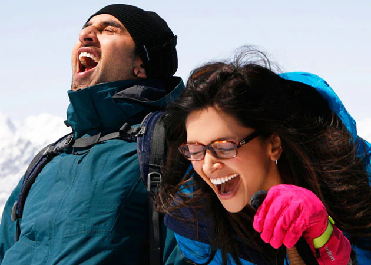
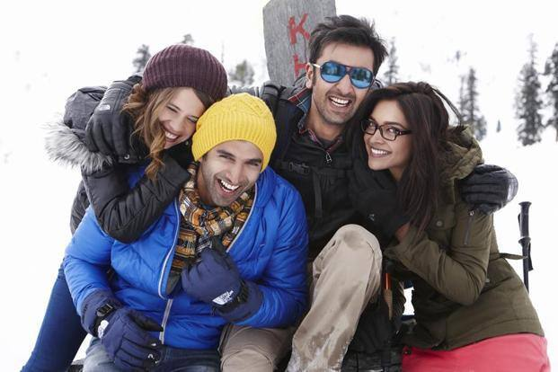
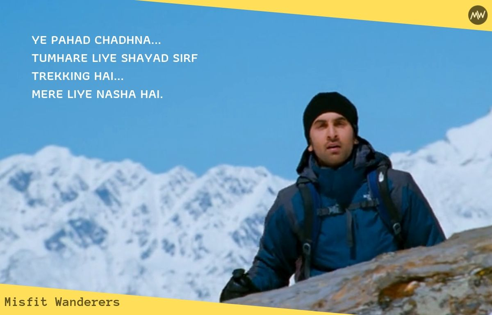
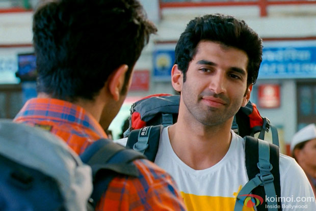
Presented by Sumit Saha